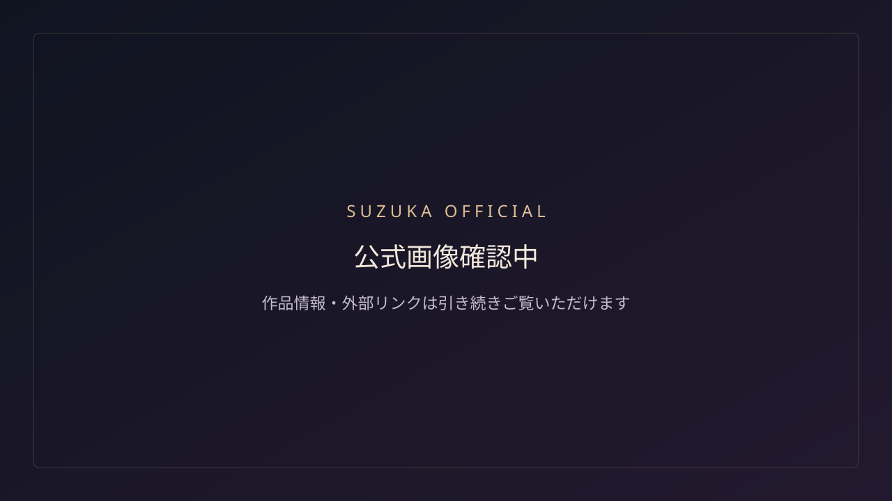

OFFICIAL NEWS · 2026-09-30
榎本魅愛「キャラメ〜ル」Artistチャンネル動画公開
榎本魅愛の公式Artistチャンネルで「キャラメ〜ル」のOFFICIAL VIDEOを公開。既存のSUZUKA公開版も作品ページからご覧いただけます。
SUZUKAのオリジナルAIアーティストに関する公式情報です。
GATE EXPERIENCE
正式な重低音Ver.2が未登録です。扉は無音で開きます。OFFICIAL NEWS · 2026-09-30
榎本魅愛の公式Artistチャンネルで「キャラメ〜ル」のOFFICIAL VIDEOを公開。既存のSUZUKA公開版も作品ページからご覧いただけます。
SUZUKAのオリジナルAIアーティストに関する公式情報です。
